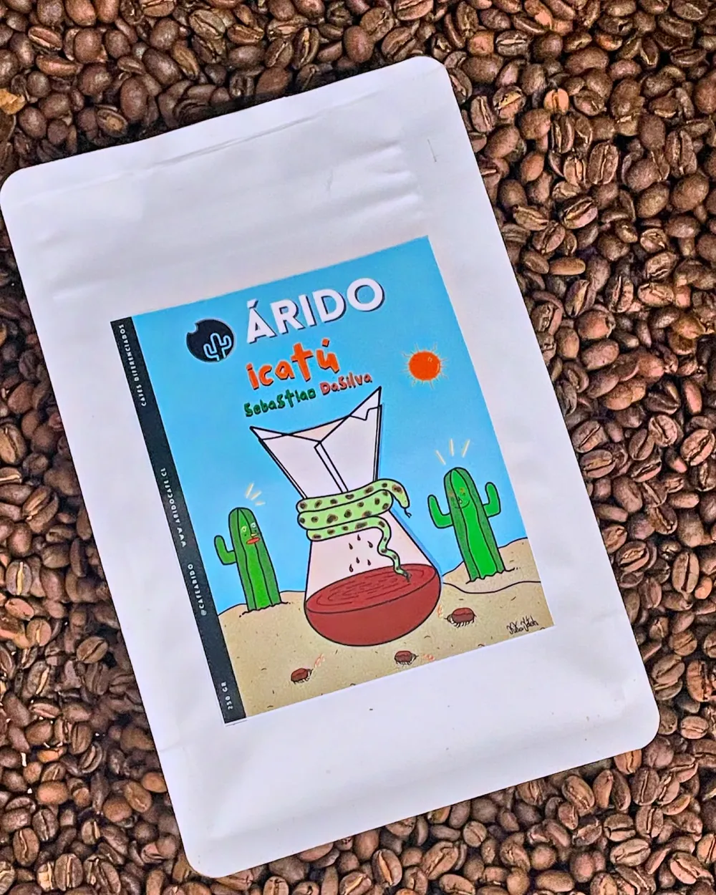
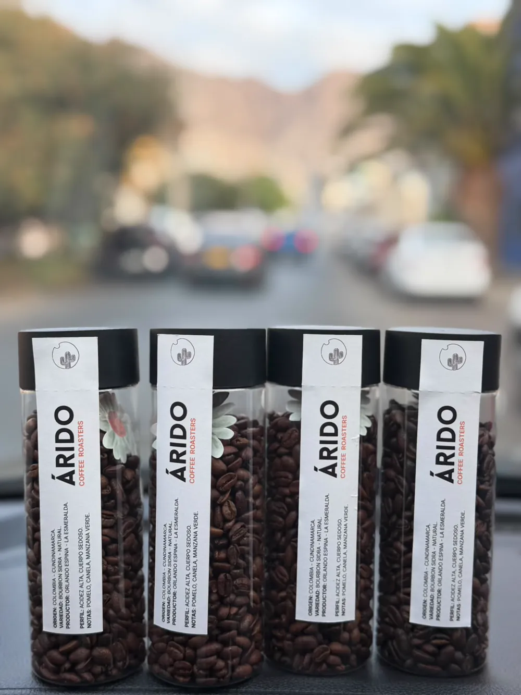
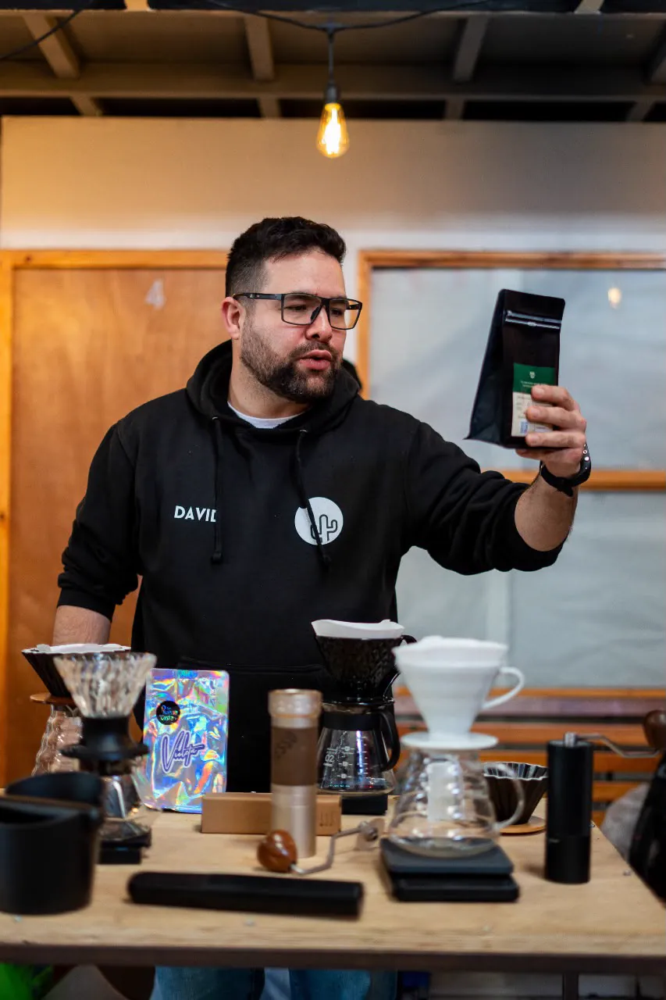

El espíritu del desierto en cada grano.
Árido nace de la templanza del desierto y la resistencia del alma nortina. Así como la vicuña recorre las alturas del altiplano y el zorro del desierto desafía la inmensidad, nuestros granos expresan el carácter del norte chileno en cada taza.
-
La mirada sigilosa de la vizcacha vigila la calidad de la materia prima,
-
el chungungo travieso tuesta con sagacidad cada grano
-
y la parina prueba con recelo y cuidado cada lote para asegurar el mejor sabor.
Árido representa la herencia ancestral y la conexión con la vida del desierto. Nuestros valores se ven representados por la fauna del norte chileno.
- 0
- Tipos de café
según su complejidad - 0
- Regiones de Chile
Llegamos a todo Chile por BluExpress - Llegamos aTodo Chile
- De Arica a Magallanes.
Nuestros cafés
¿Qué es cada tipo?
Catalogamos nuestros cafés en función de su complejidad aromática, calidad de procesos y exclusividad del grano. Por lo que segmentamos nuestros granos en 3 tipos.
- Tipo 1
- OrígenesBrasil, Perú, Bolivia, Honduras, Colombia
- ProcesoLavado
- Ideal paraEspresso, bebidas con leche
- Tipo 2
- OrígenesPerú, Colombia, México, Bolivia
- ProcesoNatural o Lavado con fermentación controlada
- Ideal paraEspresso y Filtrado
- Tipo 3
- Cafés excepcionales o con procesos experimentales.
- OrígenesColombia, Perú
- Ideal paraFiltrados
Por ahora no tenemos cafés de este tipo disponibles.
Desliza para explorar los orígenes · Toca un café para ver su ficha
Tostamos en Antofagasta, con ciencia y consciencia.
Nos aseguramos de mantener altos estándares de calidad en nuestra materia prima, tostamos midiendo cada parámetro cuidadosamente y catamos cada batch para ajustar con precisión sus curvas de tueste. Desde la recepción del grano verde hasta el empaquetado final, cuidamos el café como quien conoce el clima extremo de nuestra tierra. Así transformamos la energía del grano en una taza balanceada, limpia y con la personalidad única del norte de Chile.
- Grano verde
(entrada) - Turning Point
- Secado
- Reacción de Maillard
- Primer crack
- Desarrollo
- Café tostado
(salida)
El Norte es Fauna · El Norte es Café · El Norte es Árido
La tostadora
Nuestra "Panchita" es una Yoshan SD-3K que baila a ritmo de saya con cada batch. Importada en Chile por nuestros partners de Café Brachi.
El perfil
Cada grano, una curva distinta: un perfil creado según las características organolépticas del café, su densidad, humedad, tamaño y resultado en taza.
Los lotes
Tostamos todas las semanas para que siempre puedas contar con café fresco y aproveches así todos los beneficios del grano y su máximo sabor.
[TÍTULO DE EVENTOS — PENDIENTE]
[DESCRIPCIÓN DE LOS EVENTOS — FECHAS, LUGAR Y CÓMO PARTICIPAR — PENDIENTE]


